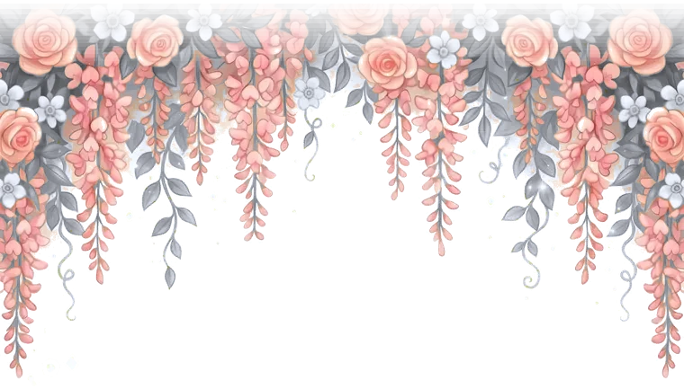
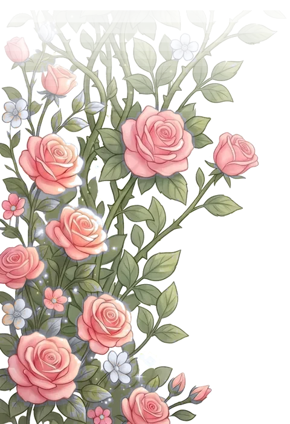

Mis XV Años
27 · 12 · 2026
Desliza

Desde niña soñé con este día… Hoy las puertas de mi castillo se abren para celebrar mis quince años, el comienzo de un nuevo capítulo lleno de sueños, ilusiones y bendiciones.
Hanna
Con la bendición de Dios y el amor de mi madre
Dra. Verónica Tapia Pineda
y de mis padrinos
C.P. Concepción Morán Aragón&Ing. Alejandro Sánchez Carrera
Tengo el honor de invitarte a celebrar este día tan especial
Falta poco
281Días
13Horas
36Min
57Seg
Reserva la fecha
Diciembre
Domingo
27
2026
Misa 3:00 p.m.
Recuerdos


Desliza para ver

28 de diciembre: la fiesta dará inicio a las 3 pm con una calenda que partirá del domicilio del profesor Ángel Pineda
27 · 12 · 2026
